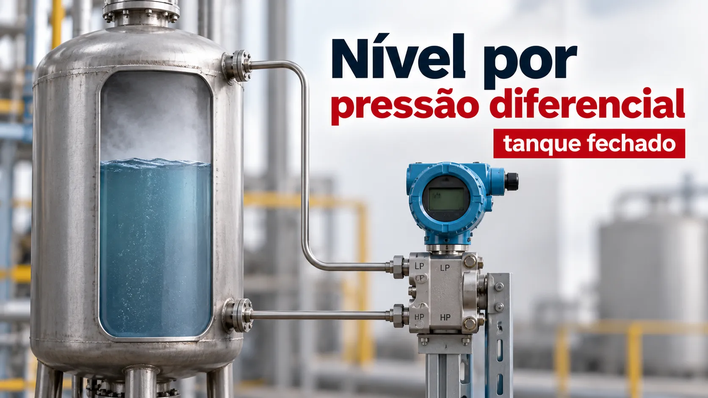

Pressão hidrostática, densidade e medição de nível
Conteúdo técnico: ALOGY Engenharia · Atualizado em: 11/09/2026

Na medição hidrostática, o transmissor não “enxerga nível” diretamente: ele mede a pressão produzida pela coluna de fluido. Por isso, altura, densidade, gravidade e referência de pressão precisam estar coerentes com a instalação.
Relação fundamental ρgh
P é a pressão hidrostática, ρ é a densidade do fluido, g é a aceleração da gravidade e h é a altura efetiva da coluna.
Para a mesma altura, um fluido mais denso produz mais pressão. Para a mesma pressão medida, assumir densidade menor do que a real tende a superestimar a altura calculada.
Tanque aberto e tanque fechado
Em tanque aberto, a pressão sobre a superfície é normalmente atmosférica e a leitura manométrica no fundo representa a coluna líquida. Em tanque fechado, a pressão do espaço de vapor precisa ser compensada — normalmente por medição diferencial HP/LP — para que a parcela comum não seja interpretada como nível.
LRV, URV e posição do transmissor
O range deve considerar a cota da tomada, a elevação do transmissor, linhas de impulso e, quando existirem, wet leg, dry leg ou remote seals. Um LRV negativo pode ser consequência normal da instalação; não deve ser “zerado” sem conferir o desenho e a configuração.
Densidade é uma variável de processo
Produto aquecido, mudança de concentração, composição diferente ou gás incorporado podem alterar a densidade. Se o sistema converte DP em nível usando densidade fixa, a indicação pode variar mesmo com altura constante.
Falhas que parecem erro de densidade
- linha de impulso parcialmente obstruída ou com bolha;
- condensado ausente/variável em perna molhada;
- manifold em condição incorreta;
- remote seal/capilar com efeito térmico;
- LRV/URV ou cota de tomada diferentes da documentação;
- pressão de vapor não compensada.
Roteiro de diagnóstico
- Confirme TAG, unidade, LRV/URV e tipo de pressão.
- Compare cotas de campo com desenho de instalação.
- Verifique a condição de HP/LP, manifold e linhas.
- Confirme densidade e temperatura usadas na conversão.
- Separe erro do transmissor de erro de processo/instalação antes de ajustar.
Ferramentas e conteúdos relacionados
Aviso técnico
Este conteúdo apoia conferência e diagnóstico. Para range final, projeto ou intervenção, use densidades/cotas reais, documentação do fabricante, desenho da instalação, procedimento aplicável e profissional habilitado.